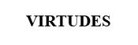

Semblanza curricular


- Educación Superior: Ingeniería en Robótica Indutrial – Escuela Superior de Ingeniería Mecánica y Eléctrica (ESIME) Azcapotzalco, CDMX | 2020 – 2024
- Educación Media Superior: Técnico en Sistemas Digitales - Centro de Estudios Científicos y Tecnológicos N.9 (Cecyt 9) Miguel Hidalgo, CDMX |2017– 2020
- Educación Secundaria: Ricardo Bell N.261 Nezahualcóyotl, Estado de México | 2014– 2017
- Educación Primaria: Venustiano Carranza, Nezahualcóyotl, Estado de México | 2008– 2014
